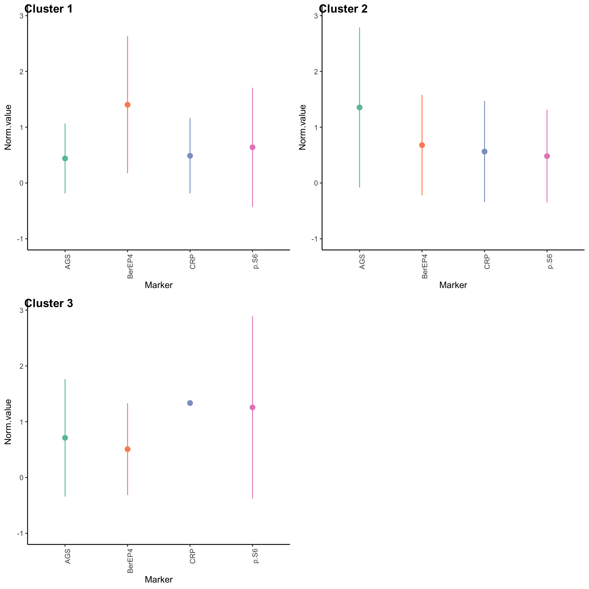
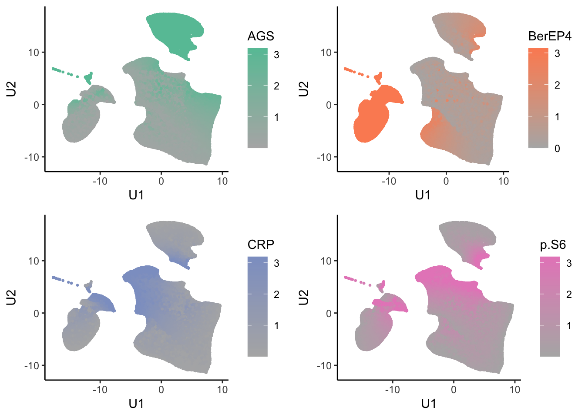
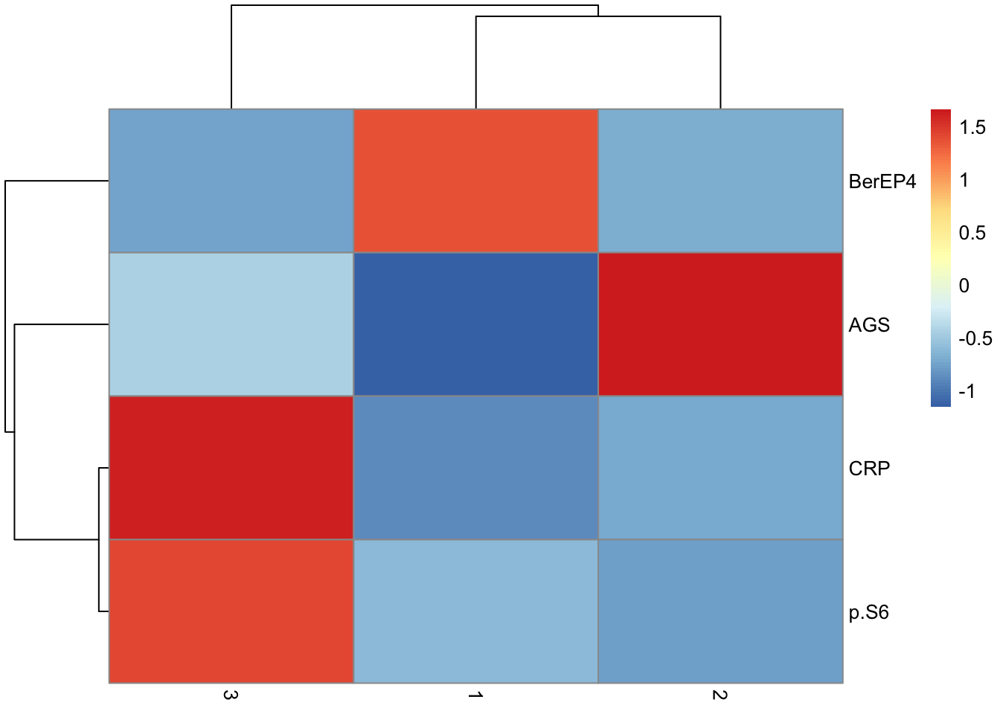

cores
Jovan Tanevski
2025-06-23
Last updated: 2025-06-23
Checks: 7 0
Knit directory: Multispectral HCC/
This reproducible R Markdown analysis was created with workflowr (version 1.7.1). The Checks tab describes the reproducibility checks that were applied when the results were created. The Past versions tab lists the development history.
Great! Since the R Markdown file has been committed to the Git repository, you know the exact version of the code that produced these results.
Great job! The global environment was empty. Objects defined in the global environment can affect the analysis in your R Markdown file in unknown ways. For reproduciblity it’s best to always run the code in an empty environment.
The command set.seed(20210728) was run prior to running
the code in the R Markdown file. Setting a seed ensures that any results
that rely on randomness, e.g. subsampling or permutations, are
reproducible.
Great job! Recording the operating system, R version, and package versions is critical for reproducibility.
Nice! There were no cached chunks for this analysis, so you can be confident that you successfully produced the results during this run.
Great job! Using relative paths to the files within your workflowr project makes it easier to run your code on other machines.
Great! You are using Git for version control. Tracking code development and connecting the code version to the results is critical for reproducibility.
The results in this page were generated with repository version b177463. See the Past versions tab to see a history of the changes made to the R Markdown and HTML files.
Note that you need to be careful to ensure that all relevant files for
the analysis have been committed to Git prior to generating the results
(you can use wflow_publish or
wflow_git_commit). workflowr only checks the R Markdown
file, but you know if there are other scripts or data files that it
depends on. Below is the status of the Git repository when the results
were generated:
Ignored files:
Ignored: .DS_Store
Ignored: .Rhistory
Ignored: .Rproj.user/
Ignored: analysis/.DS_Store
Ignored: code/
Ignored: data/
Ignored: old/
Ignored: output/.DS_Store
Ignored: output/cores_3/.DS_Store
Ignored: output/silhouette.nmf.rds
Ignored: output/tumor.hc.nmf.all.3.rds
Ignored: output/tumor.hc.nmf.rank.1.rds
Ignored: output/tumor.hc.nmf.rank.10.rds
Ignored: output/tumor.hc.umap.rds
Untracked files:
Untracked: Figures_V4.docx
Untracked: Manuskript MSI_V7_JT.docx
Unstaged changes:
Modified: output/cores_3/12_291_T_HCC1_Core[1,5,K]_[58929,10236].tif.pdf
Note that any generated files, e.g. HTML, png, CSS, etc., are not included in this status report because it is ok for generated content to have uncommitted changes.
These are the previous versions of the repository in which changes were
made to the R Markdown (analysis/cores_3.Rmd) and HTML
(docs/cores_3.html) files. If you’ve configured a remote
Git repository (see ?wflow_git_remote), click on the
hyperlinks in the table below to view the files as they were in that
past version.
| File | Version | Author | Date | Message |
|---|---|---|---|---|
| Rmd | b177463 | Jovan Tanevski | 2025-06-23 | wflow_publish("analysis/cores_3.Rmd") |
| html | d02791d | Jovan Tanevski | 2021-11-12 | Build site. |
| Rmd | f582507 | Jovan Tanevski | 2021-11-12 | pch 21 in cores, increase resolution |
| html | f041ce0 | Jovan Tanevski | 2021-11-12 | Build site. |
| Rmd | 1a7cca3 | Jovan Tanevski | 2021-11-12 | wflow_publish("analysis/cores_3.Rmd") |
| Rmd | a52096d | Jovan Tanevski | 2021-11-12 | overlay tifs with cluster info, manual silhouette calculation |
| Rmd | baf95ea | Jovan Tanevski | 2021-11-12 | keep all residuals, fix object access |
| Rmd | 6ff2531 | Jovan Tanevski | 2021-11-11 | small fix |
| Rmd | e98088d | Jovan Tanevski | 2021-11-11 | core analysis of all hepatocytes for one core per patient |
| html | 515f7e6 | Jovan Tanevski | 2021-10-28 | Build site. |
| html | 434cb0d | Jovan Tanevski | 2021-10-27 | Build site. |
| html | a915f46 | Jovan Tanevski | 2021-10-27 | Build site. |
| Rmd | a56dc0c | Jovan Tanevski | 2021-10-27 | remove beta-cat, add cores 3 and 4 clusters |
Setup
library(skimr)
library(uwot)
library(limma)
library(NMF)
library(cowplot)
library(pheatmap)
library(RColorBrewer)
library(distances)
library(furrr)
library(raster)
library(RStoolbox)
library(tidyverse)data <- read_csv("data/tumor_hepatocytes.csv", col_types = cols())Warning: One or more parsing issues, call `problems()` on your data frame for details,
e.g.:
dat <- vroom(...)
problems(dat)tumor.hc <- data %>%
select(
`Cytoplasm AGS (Opal 690) Mean (Normalized Counts, Total Weighting)`,
`Cytoplasm BerEP4 (Opal 650) Mean (Normalized Counts, Total Weighting)`,
`Cytoplasm CRP (Opal 540) Mean (Normalized Counts, Total Weighting)`,
`Nucleus p-S6 (Opal 570) Mean (Normalized Counts, Total Weighting)`,
# `Nucleus beta-cat. (Opal 520) Mean (Normalized Counts, Total Weighting)`
) %>%
`colnames<-`(str_split(colnames(.), " ") %>% map_chr(~ .x[2]) %>% make.names())
skim(tumor.hc)| Name | tumor.hc |
| Number of rows | 223846 |
| Number of columns | 4 |
| _______________________ | |
| Column type frequency: | |
| numeric | 4 |
| ________________________ | |
| Group variables | None |
Variable type: numeric
| skim_variable | n_missing | complete_rate | mean | sd | p0 | p25 | p50 | p75 | p100 | hist |
|---|---|---|---|---|---|---|---|---|---|---|
| AGS | 0 | 1 | 0.27 | 0.41 | 0 | 0.07 | 0.12 | 0.25 | 5.23 | ▇▁▁▁▁ |
| BerEP4 | 0 | 1 | 1.09 | 2.19 | 0 | 0.21 | 0.32 | 0.58 | 24.08 | ▇▁▁▁▁ |
| CRP | 0 | 1 | 2.51 | 3.08 | 0 | 0.55 | 1.00 | 3.50 | 35.80 | ▇▁▁▁▁ |
| p.S6 | 0 | 1 | 1.31 | 1.25 | 0 | 0.58 | 0.94 | 1.61 | 35.24 | ▇▁▁▁▁ |
Number of cells per core
cpc <- data %>% group_by(`Sample Name`) %>% summarise(Cells = n())
head(cpc, n = 10)| Sample Name | Cells |
|---|---|
| 07_4662_T_HCC1_Core[1,1,G]_[54178,3757].im3 | 2070 |
| 07_4662_T_HCC1_Core[1,1,O]_[64928,4237].im3 | 754 |
| 08_27704_T_HCC1_Core[1,3,G]_[53842,6972].im3 | 1711 |
| 08_27704_T_HCC1_Core[1,3,O]_[64593,7404].im3 | 1581 |
| 09_12058_T_HCC1_Core[1,5,G]_[53650,10140].im3 | 3079 |
| 09_12058_T_HCC1_Core[1,5,O]_[64353,10620].im3 | 2613 |
| 09_19505_T_HCC1_Core[1,7,G]_[53554,13307].im3 | 2020 |
| 09_19505_T_HCC1_Core[1,7,O]_[64353,13643].im3 | 1489 |
| 10_1150_T_HCC1_Core[1,9,G]_[53362,16427].im3 | 5037 |
| 10_1150_T_HCC1_Core[1,9,O]_[64209,16715].im3 | 3902 |
write_csv(cpc, "output/cells_per_core.csv")Detect outliers based on Tukey’s interquartile approach and winsorize. Follow by quantile normalization and ranking to get rid of the effect of abundance
quartiles <- apply(tumor.hc, 2, \(x) quantile(x, c(.25, .75)))
lower <- quartiles[1, ] - 1.5 * (quartiles[2, ] - quartiles[1, ])
upper <- quartiles[2, ] + 1.5 * (quartiles[2, ] - quartiles[1, ])
tumor.hc.winsorized <- tumor.hc %>% imap_dfc(\(x, y){
x[x < lower[y]] <- x[which.min(abs(x - lower[y]))]
x[x > upper[y]] <- x[which.min(abs(x - upper[y]))]
x
})
skim(tumor.hc.winsorized)| Name | tumor.hc.winsorized |
| Number of rows | 223846 |
| Number of columns | 4 |
| _______________________ | |
| Column type frequency: | |
| numeric | 4 |
| ________________________ | |
| Group variables | None |
Variable type: numeric
| skim_variable | n_missing | complete_rate | mean | sd | p0 | p25 | p50 | p75 | p100 | hist |
|---|---|---|---|---|---|---|---|---|---|---|
| AGS | 0 | 1 | 0.19 | 0.16 | 0 | 0.07 | 0.12 | 0.25 | 0.52 | ▇▅▂▁▃ |
| BerEP4 | 0 | 1 | 0.46 | 0.35 | 0 | 0.21 | 0.32 | 0.58 | 1.15 | ▆▇▂▁▃ |
| CRP | 0 | 1 | 2.31 | 2.50 | 0 | 0.55 | 1.00 | 3.50 | 7.93 | ▇▂▁▁▂ |
| p.S6 | 0 | 1 | 1.21 | 0.83 | 0 | 0.58 | 0.94 | 1.61 | 3.16 | ▆▇▃▂▂ |
tumor.hc.norm <- normalizeQuantiles(data.frame(tumor.hc.winsorized))
skim(tumor.hc.norm)| Name | tumor.hc.norm |
| Number of rows | 223846 |
| Number of columns | 4 |
| _______________________ | |
| Column type frequency: | |
| numeric | 4 |
| ________________________ | |
| Group variables | None |
Variable type: numeric
| skim_variable | n_missing | complete_rate | mean | sd | p0 | p25 | p50 | p75 | p100 | hist |
|---|---|---|---|---|---|---|---|---|---|---|
| AGS | 0 | 1 | 1.06 | 0.99 | 0 | 0.35 | 0.6 | 1.49 | 3.19 | ▇▃▁▁▂ |
| BerEP4 | 0 | 1 | 1.07 | 1.00 | 0 | 0.35 | 0.6 | 1.49 | 3.15 | ▇▃▂▁▂ |
| CRP | 0 | 1 | 1.04 | 0.96 | 0 | 0.35 | 0.6 | 1.49 | 3.19 | ▇▃▁▁▂ |
| p.S6 | 0 | 1 | 1.04 | 0.96 | 0 | 0.35 | 0.6 | 1.49 | 3.19 | ▇▃▁▁▂ |
tumor.hc.rank <- mutate_all(tumor.hc.winsorized, ~ rank(., ties.method = "min"))Subsample one core per patient from the original data.
set.seed(42)
selected.cores <- data %>% select(`Sample Name`) %>%
mutate(sample = str_extract(`Sample Name`, "[0-9]{2}_[0-9]+")) %>%
group_by(`Sample Name`) %>% distinct() %>% ungroup() %>%
group_by(sample) %>% slice_sample() %>% pull(`Sample Name`)
subsamp <- which(data %>% pull(`Sample Name`) %in% selected.cores)Dimensionality reduction
cache <- "output/tumor.hc.umap.rds"
if (file.exists(cache)) {
tumor.hc.umap <- read_rds(cache)
} else {
tumor.hc.umap <- umap(tumor.hc.norm, n_neighbors = 100,
min_dist = 0.2, n_threads = 7)
write_rds(tumor.hc.umap, cache, "gz")
}
tumor.hc.umap.sample <-
tumor.hc.umap %>%
`colnames<-`(c("U1", "U2")) %>%
as_tibble()Check if sample is representative in UMAP space
all <- ggplot(tumor.hc.umap.sample, aes(x = U1, y = U2)) +
geom_point(size = 0.5) +
theme_classic()
sampled <- ggplot(tumor.hc.umap.sample %>% slice(subsamp), aes(x = U1, y = U2)) +
geom_point(color = "darkgreen", size = 0.5) +
theme_classic()
unsampled <- ggplot(tumor.hc.umap.sample %>% slice(-subsamp), aes(x = U1, y = U2)) +
geom_point(color = "darkred", size = 0.5) +
theme_classic()
plot_grid(all, sampled, unsampled)
Consensus NMF
We use an efficient implementation of alternating non negative least-squares with regularized to favor sparse coefficient matrices snmf/r. In this way we aim for cleaner clustering.
cache <- "output/tumor.hc.nmf.all.3.rds"
if (file.exists(cache)) {
tumor.hc.nmf <- read_rds(cache)
} else {
tumor.hc.nmf <- nmf(as.matrix(t(tumor.hc.rank[subsamp, ])),
rank = 3, method = "snmf/r",
nrun = 10, seed = 42, verbose = TRUE,
.options = "vkp10-m"
)
write_rds(tumor.hc.nmf, cache, "gz")
}Extract basis of NMF (signature of cluster)
basismap(tumor.hc.nmf)Assign clusters
nmf.clusters <- apply(fit(tumor.hc.nmf)@H, 2, which.max)Assignments per core
percore <- data %>% slice(subsamp) %>% select(`Sample Name`) %>% mutate(Cluster = nmf.clusters) %>%
group_by(`Sample Name`) %>% select(Cluster) %>% table() %>% data.frame() %>% pivot_wider(names_from = Cluster, values_from = Freq) %>%
rowwise() %>% mutate(purity = max(`1`, `2` ,`3`)/sum(`1`,`2`,`3`))Adding missing grouping variables: `Sample Name`head(percore, n=10)| Sample.Name | 1 | 2 | 3 | purity |
|---|---|---|---|---|
| 07_4662_T_HCC1_Core[1,1,O]_[64928,4237].im3 | 39 | 318 | 397 | 0.5265252 |
| 08_27704_T_HCC1_Core[1,3,O]_[64593,7404].im3 | 0 | 1339 | 242 | 0.8469323 |
| 09_12058_T_HCC1_Core[1,5,O]_[64353,10620].im3 | 6 | 1350 | 1257 | 0.5166475 |
| 09_19505_T_HCC1_Core[1,7,O]_[64353,13643].im3 | 21 | 27 | 1441 | 0.9677636 |
| 10_1150_T_HCC1_Core[1,9,G]_[53362,16427].im3 | 40 | 73 | 4924 | 0.9775660 |
| 10_16169_T_HCC1_Core[1,5,N]_[62997,10487].im3 | 4 | 586 | 2 | 0.9898649 |
| 10_19418_T_HCC1_Core[1,7,F]_[52018,13307].im3 | 2690 | 2 | 0 | 0.9992571 |
| 10_26818_T_HCC1_Core[1,9,F]_[51922,16427].im3 | 946 | 2108 | 7 | 0.6886638 |
| 10_26871_T_HCC1_Core[1,11,N]_[62529,19786].im3 | 5 | 121 | 2861 | 0.9578172 |
| 10_28011_T_HCC1_Core[1,1,E]_[51298,3901].im3 | 944 | 20 | 2147 | 0.6901318 |
write_csv(percore, "output/clusters_per_core.csv")Plot in 2D
tumor.hc.umap.clus <-
tumor.hc.umap.sample %>%
slice(subsamp) %>%
mutate(Cluster = as.factor(nmf.clusters))
ggplot(tumor.hc.umap.clus, aes(x = U1, y = U2, color = Cluster)) +
geom_point(size = 0.5) +
theme_classic()
Expression profiles per cluster
tumor.hc.clustered.nmf <- tumor.hc.norm[subsamp, ] %>%
mutate(Cluster = as.factor(nmf.clusters)) %>%
pivot_longer(names_to = "Marker", values_to = "Norm.value", -Cluster)
profiles <- seq_len(max(nmf.clusters)) %>% map(~
ggplot(
tumor.hc.clustered.nmf %>% filter(Cluster == .x),
aes(x = Marker, y = Norm.value, color = Marker)
) +
stat_summary(fun.data = mean_sdl, show.legend = FALSE) +
scale_color_brewer(palette = "Set2") +
ylim(-1, 3) +
theme_classic() +
theme(axis.text.x = element_text(angle = 90, hjust = 1)))
plot_grid(plotlist = profiles, labels = paste("Cluster", seq_len(max(nmf.clusters))))Warning: Removed 14390 rows containing non-finite outside the scale range
(`stat_summary()`).Warning: Removed 16165 rows containing non-finite outside the scale range
(`stat_summary()`).Warning: Removed 24968 rows containing non-finite outside the scale range
(`stat_summary()`).Warning: Removed 1 row containing missing values or values outside the scale range
(`geom_segment()`).
Marker abundance plots
tumor.hc.umap.markers <- tumor.hc.norm %>%
bind_cols(tumor.hc.umap.sample) %>%
slice(subsamp)
low <- RColorBrewer::brewer.pal(8, "Set2")[8]
highs <- RColorBrewer::brewer.pal(8, "Set2")[seq_len(ncol(tumor.hc.norm))]
tumor.hc.umap.markers.plots <- colnames(tumor.hc.norm) %>%
map2(highs, \(marker, color){
ggplot(tumor.hc.umap.markers, aes_string(x = "U1", y = "U2", color = marker)) +
geom_point(size = 0.5) +
scale_color_gradient(low = low, high = color) +
theme_classic()
})Warning: `aes_string()` was deprecated in ggplot2 3.0.0.
ℹ Please use tidy evaluation idioms with `aes()`.
ℹ See also `vignette("ggplot2-in-packages")` for more information.
This warning is displayed once every 8 hours.
Call `lifecycle::last_lifecycle_warnings()` to see where this warning was
generated.plot_grid(plotlist = tumor.hc.umap.markers.plots)
Core plots
tumor.hc.umap.cores <- data %>%
select(`Sample Name`) %>%
bind_cols(tumor.hc.umap.sample) %>%
slice(subsamp) %>%
mutate(
c = nmf.clusters,
sample = str_extract(`Sample Name`, "[0-9]+_[0-9]+")
)
tumor.hc.umap.cores %>%
group_by(sample) %>%
summarize(
Fraction = table(c) / n(),
Cluster = names(Fraction),
.groups = "drop"
) %>%
mutate(Fraction = as.numeric(Fraction)) %>%
pivot_wider(names_from = "Cluster", values_from = "Fraction") %>%
column_to_rownames("sample") %>%
mutate(across(everything(), ~ replace_na(., 0))) %>%
as.matrix() %>%
pheatmap(
scale = "none",
color = colorRampPalette(brewer.pal(n = 7, name = "YlOrBr"))(100),
fontsize = 6
)Warning: Returning more (or less) than 1 row per `summarise()` group was deprecated in
dplyr 1.1.0.
ℹ Please use `reframe()` instead.
ℹ When switching from `summarise()` to `reframe()`, remember that `reframe()`
always returns an ungrouped data frame and adjust accordingly.
Call `lifecycle::last_lifecycle_warnings()` to see where this warning was
generated.
tumor.hc.umap.cores %>%
pull(sample) %>%
unique() %>%
walk(\(s){
output.fig <- paste0("output/cores_3/", s, ".png")
if (!file.exists(output.fig)) {
png(output.fig, width = 800, height = 800)
(ggplot(
tumor.hc.umap.cores %>%
mutate(c = ifelse(sample == s, c, NA), Cluster = as.factor(c)) %>%
arrange(!is.na(Cluster), Cluster),
aes(x = U1, y = U2, color = Cluster)
) +
geom_point(size = 0.5) +
scale_color_discrete(na.value = "gray80") +
theme_classic()) %>%
print()
dev.off()
}
})Figures with UMAPs for each core can be found in output.
Overlay cluster information on available tiffs
available.images <- list.files("data/core images/", full.names = TRUE)
spatial <- data %>%
select(`Sample Name`, `Cell X Position`, `Cell Y Position`) %>%
`colnames<-`(c("sample", "X", "Y")) %>%
slice(subsamp) %>%
mutate(Cluster = as.factor(nmf.clusters))
available.images %>% walk(\(img){
id <- str_extract(img, "[0-9]{2}_[0-9]+(_[^_\\.]*){4}")
name <- str_extract(img, "[0-9]{2}_[0-9]+(_[^_\\.]*)*.tif")
s <- paste0(id,".im3")
if(s %in% spatial$sample){
rb <- brick(img)
names(rb) <- c("r", "g", "b")
pdf(paste0("output/cores_3/", name, ".pdf"))
#the t should be flipped along the y direction to match coordinates in spatial
(ggRGB(flip(rb, "y"), maxpixels = 1e8) +
geom_point(data = spatial %>% filter(sample == s),
aes(x = X, y = Y, color = Cluster), pch = 21) +
theme_map()) %>%
print()
dev.off()
}
})Warning: [rast] unknown extent
Warning: [rast] unknown extent
Warning: [rast] unknown extent
Warning: [rast] unknown extent
Warning: [rast] unknown extent
Warning: [rast] unknown extent
Warning: [rast] unknown extent
Warning: [rast] unknown extent
Warning: [rast] unknown extent
Warning: [rast] unknown extent
Warning: [rast] unknown extent
Warning: [rast] unknown extent
Warning: [rast] unknown extent
Warning: [rast] unknown extent
Warning: [rast] unknown extent
Warning: [rast] unknown extent
Warning: [rast] unknown extent
Warning: [rast] unknown extent
Warning: [rast] unknown extent
Warning: [rast] unknown extent
Warning: [rast] unknown extent
Warning: [rast] unknown extent
Warning: [rast] unknown extent
Warning: [rast] unknown extent
Warning: [rast] unknown extent
Warning: [rast] unknown extent
Warning: [rast] unknown extent
Warning: [rast] unknown extentDifferential expression analysis (silhouette)
Calculate the similarity of samples using the expression and the silhouette scores based on the assigned clusters.
cache <- "output/silhouette.nmf.rds"
if (file.exists(cache)) {
silhouette.nmf <- read_rds(cache)
} else {
# manual calculation of silhouette scores with lazily evaluated distance matrix
subsamp.dists <- distances(tumor.hc.norm[subsamp, ])
plan(multisession, workers = 5)
silhouette.nmf <- nmf.clusters %>% future_imap_dbl(\(c, i){
dists <- tibble(d = subsamp.dists[i,][-i], cluster = nmf.clusters[-i]) %>%
group_by(cluster) %>%
summarize(m = mean(d))
a <- dists %>% filter(cluster == c) %>% pluck("m", 1)
b <- dists %>% filter(cluster != c) %>% pull(m) %>% min()
(b - a)/max(a, b)
}, .options = furrr::furrr_options(packages = "distances"), .progress = TRUE)
write_rds(silhouette.nmf, cache, "gz")
}
tibble(c = nmf.clusters, s = silhouette.nmf) %>%
group_by(c) %>%
summarize(m = mean(s))| c | m |
|---|---|
| 1 | 0.3791663 |
| 2 | 0.3017454 |
| 3 | 0.1130977 |
tibble(c = nmf.clusters, s = silhouette.nmf) %>%
group_by(c) %>%
summarize(zeros = sum(s<0)) %>% write_csv("output/silhouette_less_zero.csv")
print(paste0("Average silhouette score: ", mean(silhouette.nmf)))[1] "Average silhouette score: 0.250828061783453"Select only the samples with positive silhouette scores as “core samples”
core.samples <- which(silhouette.nmf > 0)
tumor.hc.core.samples <- tumor.hc.norm[subsamp, ] %>%
add_column(Cluster = nmf.clusters) %>%
slice(core.samples)Calculate difference in means (mean(cluster) - mean(other)), one-vs-all t-test per marker and correct for FDR. Filter q <= 0.05. Plot the differences.
de.table <- unique(tumor.hc.core.samples$Cluster) %>%
map_dfr(\(c){
tumor.hc.core.samples %>%
summarize(across(-Cluster, ~ t.test(.x ~ (Cluster == c))$p.value)) %>%
pivot_longer(names_to = "Marker", values_to = "p", everything()) %>%
mutate(Cluster = c, Difference = tumor.hc.core.samples %>%
group_by(Cluster == c) %>%
select(-Cluster) %>%
group_split(.keep = FALSE) %>% map(colMeans) %>% reduce(`-`))
}) %>%
mutate(q = p.adjust(p, method = "fdr"), Difference = -Difference)
de.table %>%
filter(q <= 0.05) %>%
arrange(q)| Marker | p | Cluster | Difference | q |
|---|---|---|---|---|
| AGS | 0 | 1 | -1.1509970 | 0 |
| BerEP4 | 0 | 1 | 1.3643187 | 0 |
| CRP | 0 | 1 | -0.8705340 | 0 |
| p.S6 | 0 | 1 | -0.6053700 | 0 |
| AGS | 0 | 3 | -0.4408815 | 0 |
| BerEP4 | 0 | 3 | -0.7472194 | 0 |
| CRP | 0 | 3 | 1.6290324 | 0 |
| p.S6 | 0 | 3 | 1.4251024 | 0 |
| AGS | 0 | 2 | 1.6605926 | 0 |
| BerEP4 | 0 | 2 | -0.7006696 | 0 |
| CRP | 0 | 2 | -0.7032498 | 0 |
| p.S6 | 0 | 2 | -0.7808243 | 0 |
de.table %>%
pivot_wider(names_from = "Cluster", values_from = "Difference", -c(p, q)) %>%
column_to_rownames("Marker") %>%
as.matrix() %>%
pheatmap(scale = "none")Warning: Specifying the `id_cols` argument by position was deprecated in tidyr 1.3.0.
ℹ Please explicitly name `id_cols`, like `id_cols = -c(p, q)`.
Call `lifecycle::last_lifecycle_warnings()` to see where this warning was
generated.
sessionInfo()R version 4.5.0 (2025-04-11)
Platform: aarch64-apple-darwin20
Running under: macOS Sequoia 15.5
Matrix products: default
BLAS: /Library/Frameworks/R.framework/Versions/4.5-arm64/Resources/lib/libRblas.0.dylib
LAPACK: /Library/Frameworks/R.framework/Versions/4.5-arm64/Resources/lib/libRlapack.dylib; LAPACK version 3.12.1
locale:
[1] en_US.UTF-8/en_US.UTF-8/en_US.UTF-8/C/en_US.UTF-8/en_US.UTF-8
time zone: Europe/Berlin
tzcode source: internal
attached base packages:
[1] stats graphics grDevices utils datasets methods base
other attached packages:
[1] lubridate_1.9.4 forcats_1.0.0 stringr_1.5.1
[4] dplyr_1.1.4 purrr_1.0.4 readr_2.1.5
[7] tidyr_1.3.1 tibble_3.3.0 ggplot2_3.5.2
[10] tidyverse_2.0.0 RStoolbox_1.0.2.1 raster_3.6-32
[13] sp_2.2-0 furrr_0.3.1 future_1.58.0
[16] distances_0.1.12 RColorBrewer_1.1-3 pheatmap_1.0.13
[19] cowplot_1.1.3 NMF_0.28 synchronicity_1.3.10
[22] bigmemory_4.6.4 Biobase_2.68.0 BiocGenerics_0.54.0
[25] generics_0.1.4 cluster_2.1.8.1 rngtools_1.5.2
[28] registry_0.5-1 limma_3.64.1 uwot_0.2.3
[31] Matrix_1.7-3 skimr_2.1.5 workflowr_1.7.1
loaded via a namespace (and not attached):
[1] rstudioapi_0.17.1 jsonlite_2.0.0 magrittr_2.0.3
[4] farver_2.1.2 rmarkdown_2.29 fs_1.6.6
[7] vctrs_0.6.5 base64enc_0.1-3 terra_1.8-54
[10] htmltools_0.5.8.1 Formula_1.2-5 pROC_1.18.5
[13] caret_7.0-1 sass_0.4.10 parallelly_1.45.0
[16] KernSmooth_2.23-26 bslib_0.9.0 htmlwidgets_1.6.4
[19] plyr_1.8.9 cachem_1.1.0 uuid_1.2-1
[22] whisker_0.4.1 lifecycle_1.0.4 iterators_1.0.14
[25] pkgconfig_2.0.3 R6_2.6.1 fastmap_1.2.0
[28] digest_0.6.37 colorspace_2.1-1 ps_1.9.1
[31] rprojroot_2.0.4 Hmisc_5.2-3 labeling_0.4.3
[34] timechange_0.3.0 httr_1.4.7 compiler_4.5.0
[37] proxy_0.4-27 bit64_4.6.0-1 withr_3.0.2
[40] doParallel_1.0.17 backports_1.5.0 htmlTable_2.4.3
[43] DBI_1.2.3 MASS_7.3-65 lava_1.8.1
[46] classInt_0.4-11 ModelMetrics_1.2.2.2 tools_4.5.0
[49] units_0.8-7 foreign_0.8-90 httpuv_1.6.16
[52] future.apply_1.20.0 nnet_7.3-20 glue_1.8.0
[55] callr_3.7.6 nlme_3.1-168 promises_1.3.3
[58] grid_4.5.0 sf_1.0-21 checkmate_2.3.2
[61] getPass_0.2-4 gridBase_0.4-7 reshape2_1.4.4
[64] recipes_1.3.1 gtable_0.3.6 tzdb_0.5.0
[67] class_7.3-23 hms_1.1.3 data.table_1.17.6
[70] foreach_1.5.2 pillar_1.10.2 vroom_1.6.5
[73] later_1.4.2 splines_4.5.0 lattice_0.22-7
[76] bit_4.6.0 survival_3.8-3 tidyselect_1.2.1
[79] knitr_1.50 git2r_0.36.2 gridExtra_2.3
[82] bigmemory.sri_0.1.8 stats4_4.5.0 xfun_0.52
[85] statmod_1.5.0 hardhat_1.4.1 timeDate_4041.110
[88] stringi_1.8.7 yaml_2.3.10 evaluate_1.0.4
[91] codetools_0.2-20 BiocManager_1.30.26 cli_3.6.5
[94] rpart_4.1.24 repr_1.1.7 processx_3.8.6
[97] jquerylib_0.1.4 dichromat_2.0-0.1 Rcpp_1.0.14
[100] globals_0.18.0 XML_3.99-0.18 parallel_4.5.0
[103] gower_1.0.2 exactextractr_0.10.0 listenv_0.9.1
[106] ipred_0.9-15 scales_1.4.0 prodlim_2025.04.28
[109] e1071_1.7-16 crayon_1.5.3 rlang_1.1.6